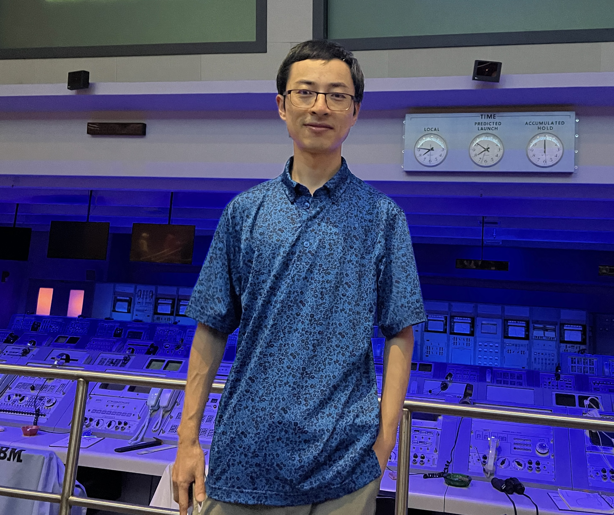

|  |
Zhiguo Wang (王志国)Principal Applied ScientistAWS AI Labs Email: zgw.tomorrow AT gmail DOT com |
Profile
I am a principal applied scientist at AWS AI Labs. My research areas include large language models (LLMs), ML for databases such as text-to-SQL semantic parsing and data-to-text generation, and question answering models over unstructured text corpus, structured knowledge bases, and multi-modal data.
I have been striving to apply cutting-edge AI technologies to real world use cases for millions of AWS customers. Since joining AWS in 2018, I have helped the launches of several high-profiling AI/ML products including Amazon Kendra in 2020, Amazon QuickSight Q in 2021, Amazon Q in 2023, and Amazon Q in QuickSight in 2023.
- Amazon Kendra is an enterprise semantic search and question answering service over large-scale unstructured data, where I led the development of the core question answering (QA) models.
- Amazon QuickSight Q is a natural language querying service over large-scale structured databases for Business Intelligence (BI) domain, where I am the founding member that proposed the idea, developed the prototype, built a large team of applied scientists and machine learning engineers from scratch, and released the product from end to end. Recently, we announced BI capabilities to reinvent BI domain with LLMs.
- Amazon Q is an AI assistant that lets users ask questions about their businesses using their own data.
- Amazon Q in QuickSight is an AI service that enhances productivity of business analysts and business users with Generative BI capabilities.
Before joining AWS, I was a research staff member at IBM T. J. Watson Research Center for 4.5 years, where I was the tech lead of the question answering group to develop the state-of-the-art ML models and apply these models for multilingual question answering. I got my Ph.D in Computer Science at the Institute of Automation, Chinese Academy of Sciences in June 2013, and worked at Brandeis University as a postdoctoral fellow in 2014. I have published 80+ papers in AI/ML/NLP conferences including ICLR, AAAI, IJCAI, ACL, NAACL, EMNLP etc. I also filed 15 US patents. I have served as an Area Chair or Senior Area Chair for top-tier AI/ML conferences including ACL, NAACL, COLING, IJCNLP, and Amazon Machine Learning Conference (AMLC).
Research Interests
LLMs, Text-to-SQL semantic parsing, Data-to-Text generation, question answering over large-scale unstructured data, question answering over structured knowledge bases, and multi-modal question answering.
Publications
2019
- Zhiguo Wang, Patrick Ng, Xiaofei Ma, Ramesh Nallapati, Bing Xiang. Multi-passage BERT: A Globally Normalized BERT Model for Open-domain Question Answering. In EMNLP 2019.
- Zhiguo Wang, Yue Zhang, Mo Yu, Wei Zhang, Lin Pan, Linfeng Song, Kun Xu, Yousef El-Kurdi. Multi-Granular Text Encoding for Self-Explaining Categorization. In BlackboxNLP 2019.
- Kun Xu, Yuxuan Lai, Yansong Feng, Zhiguo Wang. Enhancing Key-Value Memory Neural Networks for Knowledge Based Question Answering. In NAACL 2019.
- Kun Xu, Liwei Wang, Mo Yu, Yansong Feng, Yan Song, Zhiguo Wang, Dong Yu. Cross-lingual Knowledge Graph Alignment via Graph Matching Neural Network. In ACL 2019.
- Linfeng Song, Daniel Gildea, Yue Zhang, Zhiguo Wang, Jinsong Su. Semantic Neural Machine Translation using AMR. In TACL 2019.
2018
- J William Murdock, Lin Pan, Chung-Wei Hang, Mary Swift, Zhiguo Wang, Chris Nolan, Prathyusha Peddi, Nisarga Markandaiah, Eunyoung Ha, Kazi Hasan, Yang Yu, Wei Zhang. Engineered AI Still Matters for Question Answering. In Advances in Cognitive Systems 2018.
- Linfeng Song, Yue Zhang, Zhiguo Wang and Daniel Gildea. N-ary Relation Extraction using Graph State LSTM. In EMNLP 2018.
- Kun Xu, Lingfei Wu, Zhiguo Wang, Mo Yu, Liwei Chen and Vadim Sheinin. Exploiting Rich Syntactic Information for Semantic Parsing with Graph-to-Sequence Model. In EMNLP 2018.
- Kun Xu, Lingfei Wu, Zhiguo Wang, Yansong Feng and Vadim Sheinin. SQL-to-Text Generation with Graph-to-Sequence Model. In EMNLP 2018.
- Linfeng Song, Yue Zhang, Zhiguo Wang and Daniel Gildea. A Graph-to-Sequence Model for AMR-to-Text Generation. In ACL 2018.
- Linfeng Song, Zhiguo Wang, Wael Hamza, Yue Zhang and Daniel Gildea. Leveraging Context Information for Natural Question Generation. In NAACL 2018.
- Shuohang Wang, Mo Yu, Xiaoxiao Guo, Zhiguo Wang, Tim Klinger, Wei Zhang, Shiyu Chang, Gerald Tesauro, Bowen Zhou, Jing Jiang. R3: Reinforced Reader-Ranker for Open-Domain Question Answering. In AAAI 2018.
- Shuohang Wang, Mo Yu, Jing Jiang, Wei Zhang, Xiaoxiao Guo, Shiyu Chang, Zhiguo Wang, Tim Klinger, Gerald Tesauro, Murray Campbell. Evidence Aggregation for Answer Re-Ranking in Open-Domain Question Answering. In ICLR 2018.
- Yang Yu, Kazi Saidul Hasan, Mo Yu, Wei Zhang, Zhiguo Wang. Knowledge Base Relation Detection via Multi-View Matching. In 1st International Workshop on Artificial Intelligence for Question Answering, 2018.
2017
- Zhiguo Wang, Wael Hamza, Radu Florian. Bilateral Multi-Perspective Matching for Natural Language Sentences. In IJCAI 2017. [Our partition of the "Quora Question Pairs" dataset] [Code]
- Linfeng Song, Xiaochang Peng, Yue Zhang, Zhiguo Wang and Daniel Gildea. AMR-to-text Generation with Synchronous Node Replacement Grammar. In ACL 2017.
- Zhiguo Wang, Wael Hamza, Linfeng Song. k-Nearest Neighbor Augmented Neural Networks for Text Classification. In eprint arXiv:1708.07863.
- Linfeng Song, Zhiguo Wang, Wael Hamza. A Unified Query-based Generative Model for Question Generation and Question Answering. In eprint arXiv:1709.01058.
- Zhiguo Wang, Haitao Mi, Wael Hamza, Radu Florian. Multi-Perspective Context Matching for Machine Comprehension. In eprint arXiv:1612.04211.
2016
- Zhiguo Wang, Haitao Mi, Abraham Ittycheriah. Sentence Similarity Learning by Lexical Decomposition and Composition. In Coling 2016.
- Zhiguo Wang, Haitao Mi, Abraham Ittycheriah. Semi-Supervised Clustering for Short Text via Deep Representation Learning. In CoNLL 2016.
- Haitao Mi, Zhiguo Wang, Abraham Ittycheriah. Vocabulary Manipulation for Neural Machine Translation. In ACL 2016.
- Linfeng Song, Yue Zhang, Xiaochang Peng, Zhiguo Wang, Daniel Gildea. AMR-to-text generation as a Traveling Salesman Problem. In EMNLP 2016.
- Haitao Mi, Baskaran Sankaran, Zhiguo Wang, Abraham Ittycheriah. A Coverage Embedding Model for Neural Machine Translation. In EMNLP 2016.
- Linfeng Song, Zhiguo Wang, Haitao Mi, Daniel Gildea. Sense Embedding for Word Sense Induction. In Proceedings of *SEM (ACL Workshop), 2016
- Haitao Mi, Zhiguo Wang, Abraham Ittycheriah. Supervised Attentions for NMT. In EMNLP 2016.
- Young-Suk Lee, Zhiguo Wang. Language Independent Dependency to Constituent Tree Conversion. In Coling 2016.
2015
- Zhiguo Wang, Haitao Mi and Nianwen Xue. Feature Optimization for Constituent Parsing via Neural Networks. In ACL 2015.
- Zhiguo Wang, Abraham Ittycheriah. FAQ-based Question Answering via Word Alignment. In eprint arXiv:1507.02628, 2015.
2014
- Zhiguo Wang, Nianwen Xue. Joint POS Tagging and Transition-based Constituent Parsing in Chinese with Non-local Features. In ACL 2014.
2013
- Zhiguo Wang, Chengqing Zong and Nianwen Xue. A Lattice-based Framework for Joint Chinese Word Segmentation, POS Tagging and Parsing. In ACL 2013.
- Zhiguo Wang, Chengqing Zong. Large-scale Word Alignment using Soft Dependency Cohesion Constraints. Transactions of the Association for Computational Linguistics (TACL)1, 291-300, 2013.
- Zhiguo Wang, Chengqing Zong and Nianwen Xue. Bidirectional Sequence Labeling via Dual Decomposition. In Chinese Computational Linguistics and Natural Language Processing Based on Naturally Annotated Big Data, Springer, 2013.
2012
- Zhiguo Wang, Chengqing Zong. An Approach to Rerank Parses with Higher-Order Lexical Dependency Features (in Chinese). Journal of Software, 009, 2012.
2011
- Zhiguo Wang, Chengqing Zong. Parse Reranking Based on Higher-Order Lexical Dependencies. In IJCNLP 2011.
2010
- Zhiguo Wang, Chengqing Zong. Phrase structure parsing with dependency structure. In Coling 2010.
- Zhiguo Wang, Chengqing Zong. Treebank Conversion based Self-training Strategy for Parsing. In CIPS-SIGHAN Joint Conference on Chinese Language Processing, pp. 326, 2010.
Professional Services
- Senior Area chair of LREC-COLING 2023
- Senior Area chair of AMLC 2023
- Area chair of IJCNLP-AACL 2023
- Area chair of AMLC 2020, 2021, 2022
- Area chair of ACL 2021
- Area chair of NAACL 2021
- Area chair of NLPCC 2016.
- Reviewer for ACM Transactions on Audio, Speech and Language Processing, 2016
- Reviewer for ACM Transactions on Asian Language Information Processing, 2014 & 2015.
- Reviewer for IEEE Intelligent System, 2015.
- Reviewer for Engineering Applications of Artificial Intelligence, 2013 & 2015.
- Reviewer for COLING 2014 & 2016.
- Reviewer for EMNLP, 2015 & 2016.
- Reviewer for NAACL-HLT, 2015 & 2016.
- Reviewer for IJCAI, 2016 & 2017.
- Reviewer for AAAI, 2017.
- Reviewer for NLPCC, 2014 & 2015 & 2016.
- Reviewer for ACL 2017.